Part 1.1: Convolutions from Scratch
A 2D convolution flips the kernel and slides it over a zero-padded image, taking a
dot product at every position. I implemented it two ways. The first uses four nested
for loops, two over output pixels and two over kernel taps. The second is
a vectorized version that keeps only the two loops over kernel taps, and lets numpy's
array slicing handle the loop over output pixels.
def conv2d_4loop(image, kernel):
H, W = image.shape
kh, kw = kernel.shape
ph, pw = kh // 2, kw // 2
padded = np.pad(image, ((ph, ph), (pw, pw)))
flipped = kernel[::-1, ::-1]
out = np.zeros((H, W))
for i in range(H):
for j in range(W):
acc = 0.0
for m in range(kh):
for n in range(kw):
acc += padded[i + m, j + n] * flipped[m, n]
out[i, j] = acc
return out
def conv2d_2loop(image, kernel):
H, W = image.shape
kh, kw = kernel.shape
ph, pw = kh // 2, kw // 2
padded = np.pad(image, ((ph, ph), (pw, pw)))
flipped = kernel[::-1, ::-1]
out = np.zeros((H, W))
for m in range(kh):
for n in range(kw):
out += flipped[m, n] * padded[m : m + H, n : n + W]
return out
Both use zero padding of kernel_size // 2 on each side, so the output
stays the same size as the input. Boundary pixels effectively see black outside the
frame. This slightly darkens filter responses right at the edge, but keeps the indexing
simple. I checked both against scipy.signal.convolve2d on a 96×96 test
image with the 9×9 box filter below. All three agree to within
1.3×10−15, which is just floating point noise. The
vectorized version is about 250× faster than the four-loop version at
this tiny test size, and the gap only grows for bigger images. Python-level loops over
every output pixel dominate runtime, while numpy's slicing pushes the equivalent work
into C.
| Implementation | Time (96×96 image, 9×9 kernel) |
|---|---|
| 4-loop (naive) | 162.5 ms |
| 2-loop (vectorized) | 0.65 ms |
scipy.signal.convolve2d | 0.91 ms |
I ran the 2-loop version on a self-portrait with a 9×9 box filter and the finite difference operators Dx = [1, -1] and Dy = [1, -1]T.
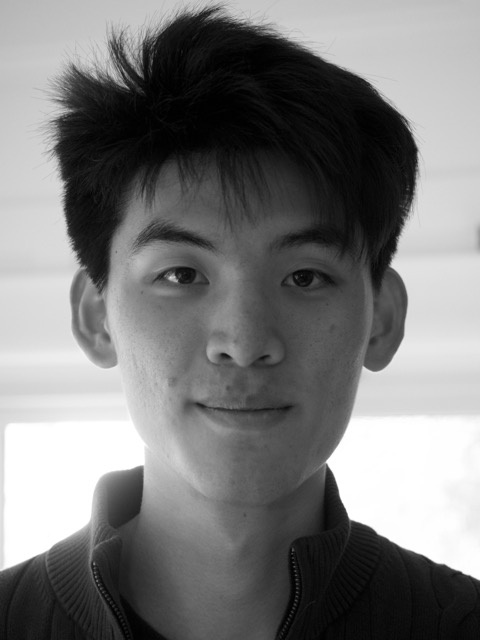
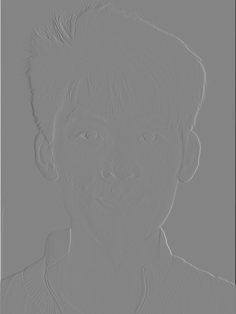
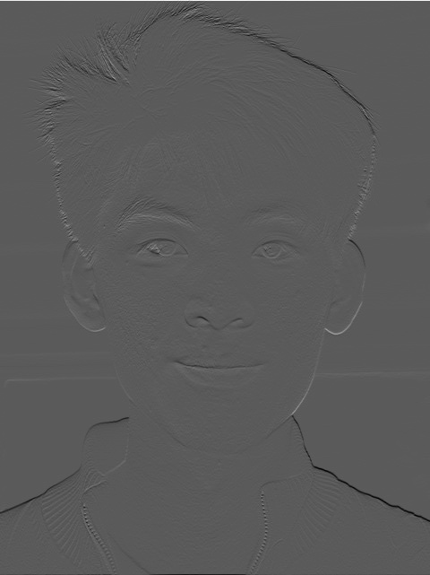
Part 1.2: Finite Difference Operator
Convolving the cameraman image with Dx and Dy
gives the partial derivatives. The gradient magnitude
sqrt(Dx² + Dy²) combines them into a single
edge-strength map, which I then binarize with a threshold.
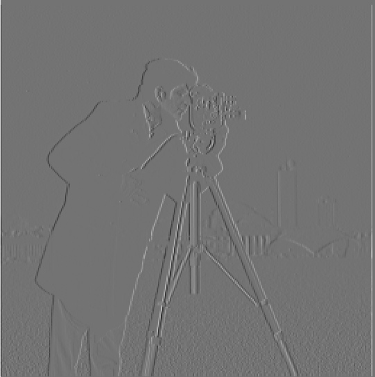
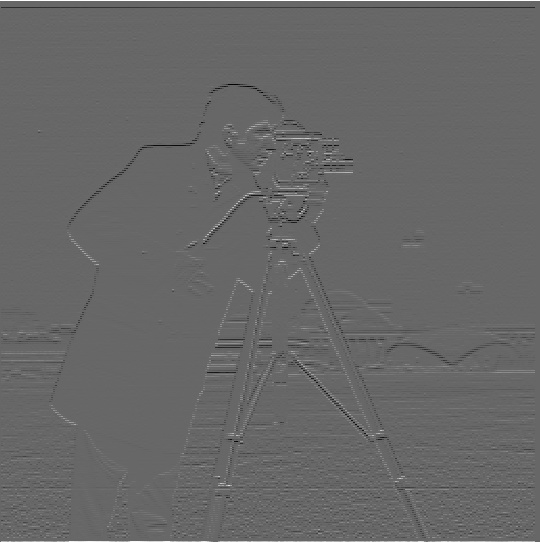
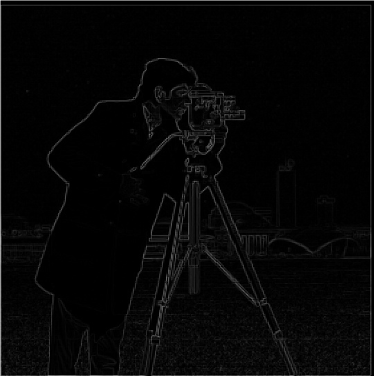
I tried five thresholds to find the right balance between noise and detail.
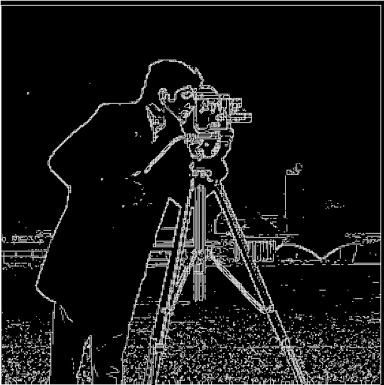
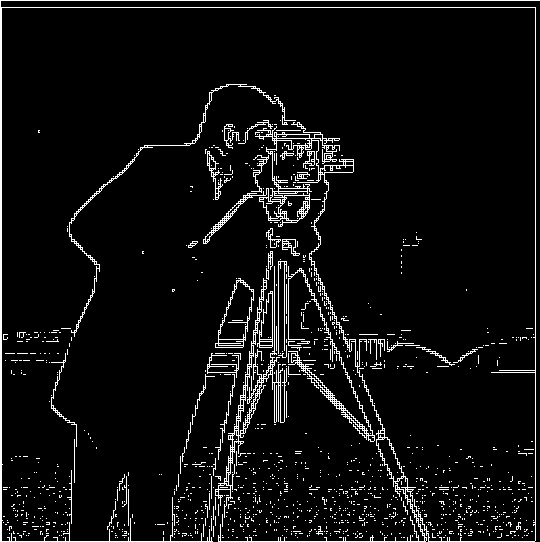
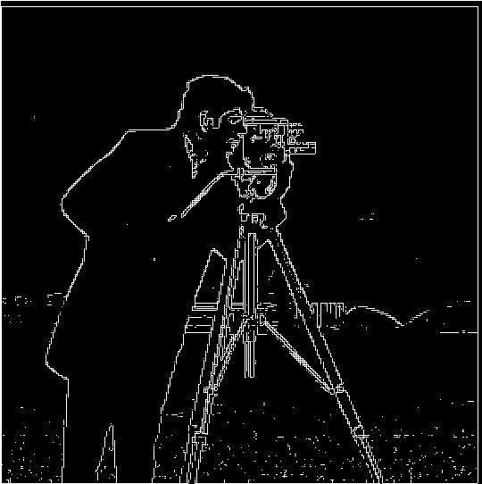

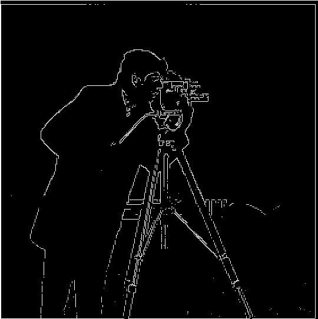
I picked t = 0.25. Below it, the grass and the coat are covered in salt-and-pepper sensor noise. Above it, at t = 0.30, real structure, part of the skyline building, starts to disappear. 0.25 is the point where the noise is mostly gone but the camera, tripod, and skyline edges are all still intact.
Part 1.3: Derivative of Gaussian (DoG) Filter
Raw finite differences are noisy because they respond to every single-pixel intensity
jump, real edge or not. Smoothing with a Gaussian first suppresses that noise before
differentiating. I built the 2D Gaussian as an outer product of a 1D kernel from
cv2.getGaussianKernel.
def gaussian_kernel_2d(ksize, sigma):
k1d = cv2.getGaussianKernel(ksize, sigma)
return k1d @ k1d.T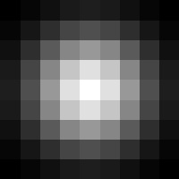
I repeated the Dx, Dy, and gradient magnitude steps on the blurred image.
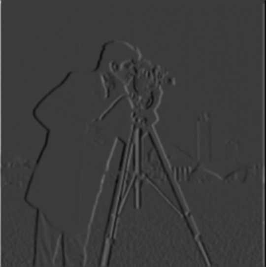
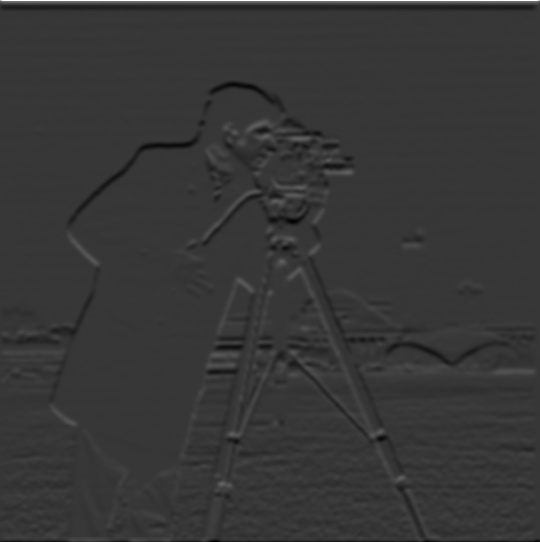
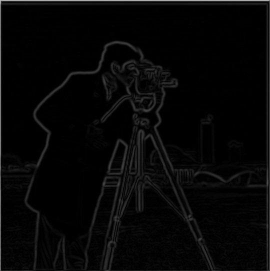
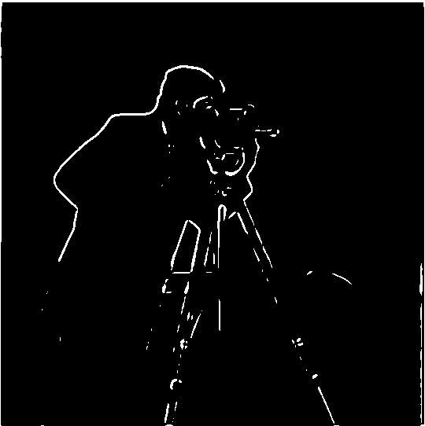
How does this compare to Part 1.2?
The pre-blur noticeably cleans up the edge map. The grass and coat texture noise that survived even the best threshold in 1.2 is almost entirely gone here, and a much lower threshold (0.10 instead of 0.25) still isolates the real edges. The tradeoff is that edges get a bit thicker and rounder, since the blur smears out the sharp intensity jump before differentiating.
Convolution is associative, so blurring and then differentiating should give the same
result as differentiating with one combined filter:
Dx ⊛ (G ⊛ I) = (Dx ⊛ G) ⊛ I.
I built that combined derivative-of-Gaussian filter directly, and confirmed it
reproduces the same result as the two-step version to within
6.6×10−16.
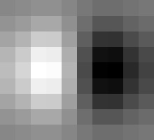
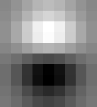
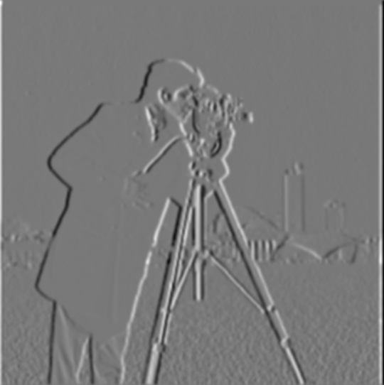
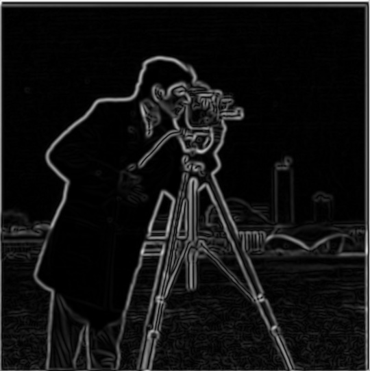
Bells & Whistles: gradient orientation in HSV
Orientation is a cyclic quantity (0° and 360° are the same direction), so it maps
naturally onto hue, which is also cyclic. I did not call np.arctan2; instead I
rebuilt the same four-quadrant angle from arcsin(Dy / magnitude), mirrored
across the y-axis when Dx < 0, then normalized to [0, 1) and fed
it through matplotlib's hsv colormap, which is cyclic so the wraparound at
0°/360° shows no seam. Brightness is scaled by gradient magnitude so flat regions
(no real orientation to show) fade to black instead of displaying noise-colored static.
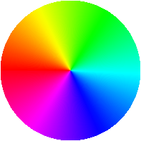
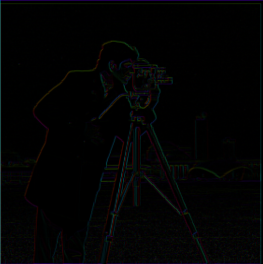
The tripod's legs run diagonally and pick up a distinctly different hue from the near-horizontal skyline in the background, and the two edges of the man's coat (which run in roughly opposite directions) show up as roughly complementary colors, exactly as the hue wheel predicts.
Part 2.1: Image "Sharpening"
A Gaussian filter is a low-pass filter, so subtracting the blurred image from the
original isolates the high frequencies. Unsharp masking adds a scaled copy of those
high frequencies back on top: sharpened = image + α(image − blurred).
Since the whole operation is linear, it folds into a single convolution with the
kernel (1+α)·impulse − α·G.
On the provided Taj Mahal photo, increasing α sharpens the image more and more.

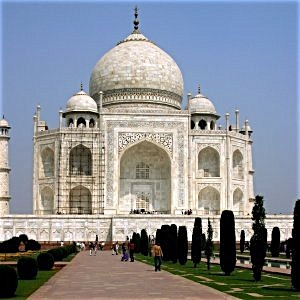
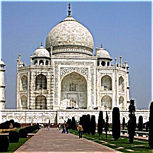
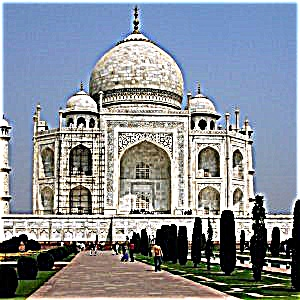
Same pipeline on a self-portrait of my own.
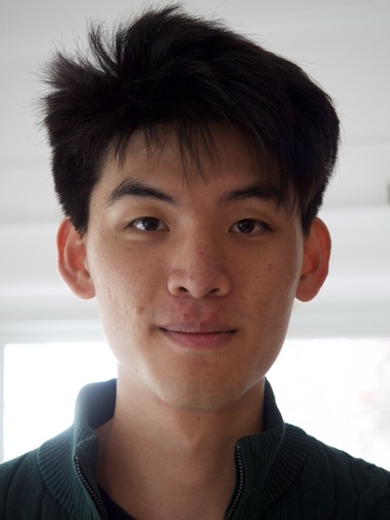
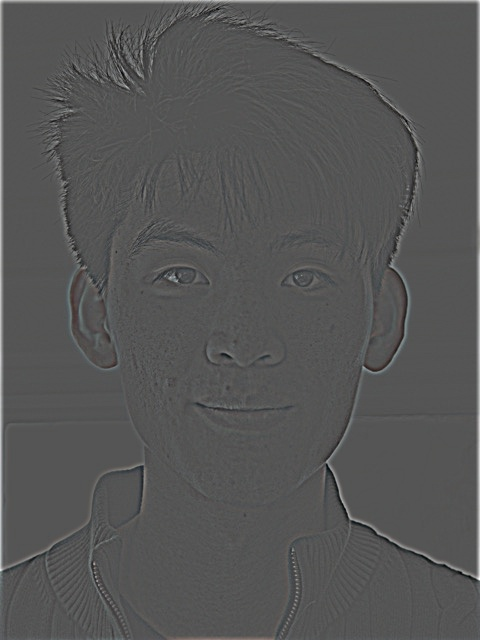
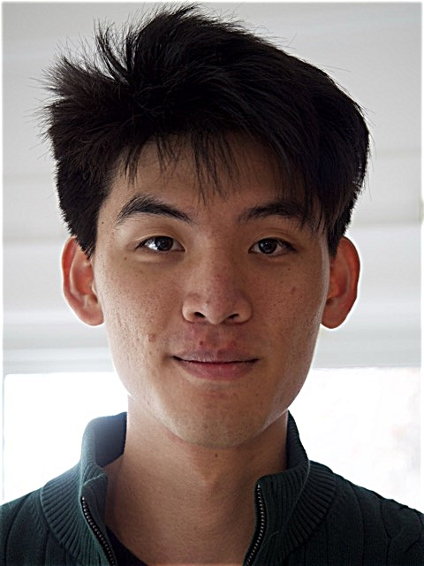
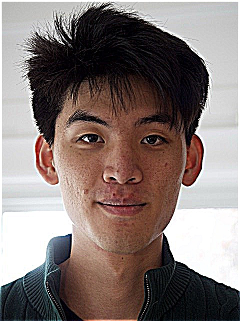
By α = 4 both images show visible ringing along strong edges, like the dome outline and the jacket collar. This is a known artifact of pushing unsharp masking too far. α around 1 to 2 looks the most natural.
Can you un-blur a blurred image?
I blurred my self-portrait, then tried to sharpen it back with the same technique (α = 2).
Mean absolute pixel difference from the true original dropped from 0.0152 (blurred) to 0.0123 (resharpened). That is some improvement, but far from a full recovery. This makes sense: a Gaussian blur is a lossy operation that genuinely destroys high-frequency information rather than just hiding it, so it cannot really be undone. Unsharp masking can only boost whatever faint high-frequency residual survived the blur. It cannot reconstruct detail that is actually gone. The resharpened hair and jacket-zipper edges look crisper than the blurred version, but still noticeably softer than the true original.
Part 2.2: Hybrid Images
A hybrid image sums the high frequencies of one image with the low frequencies of
another: hybrid = (im1 − G⊛im1) + G⊛im2. Up close,
the high-frequency image dominates perception. From a distance, or squinting, only the
smooth low-frequency image survives. I aligned each pair using the provided
align_image_code.py, clicking two corresponding points per image myself.
Interactive alignment needs a real display, so this had to be done locally rather than
by an automated script.
Derek and Nutmeg (provided sample)
I picked this as my favorite result, so it gets the full frequency analysis below.
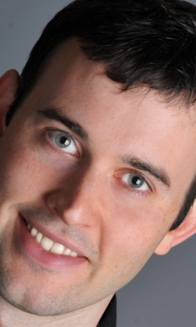
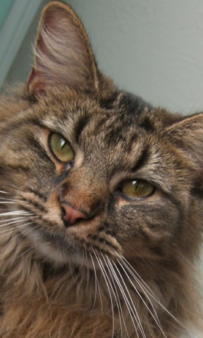
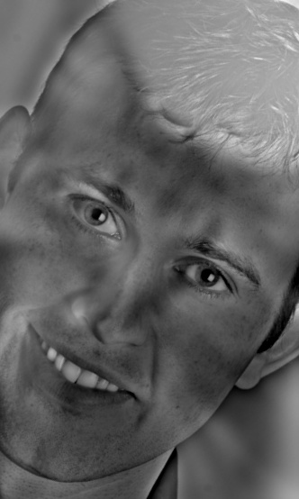
Fourier analysis of the process, showing the log magnitude of the 2D FFT:
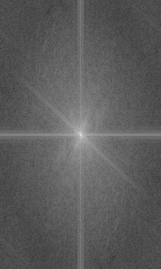
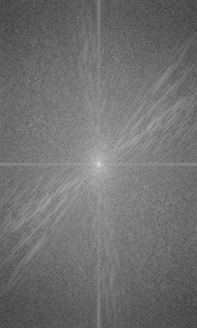
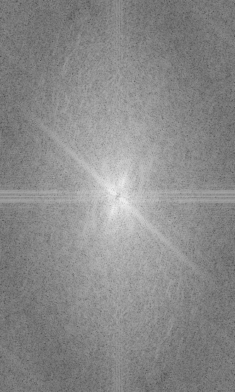
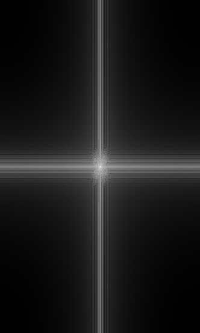
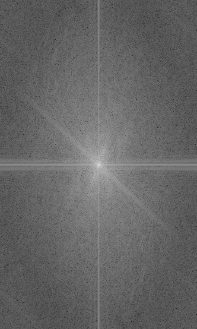
The high-pass spectrum clearly loses its bright center, since the low frequencies are suppressed. The low-pass spectrum is almost entirely a small bright blob at the center, since only low frequencies survive. The hybrid's spectrum is the sum of both. I chose the cutoff frequencies (σ=8 for both) by trial and error. They need to be low enough that Nutmeg's shape still reads clearly when squinting, and high enough that Derek's face is not blurred beyond recognition up close.
Cat and tiger
This one is a morph between animals rather than a change of expression.
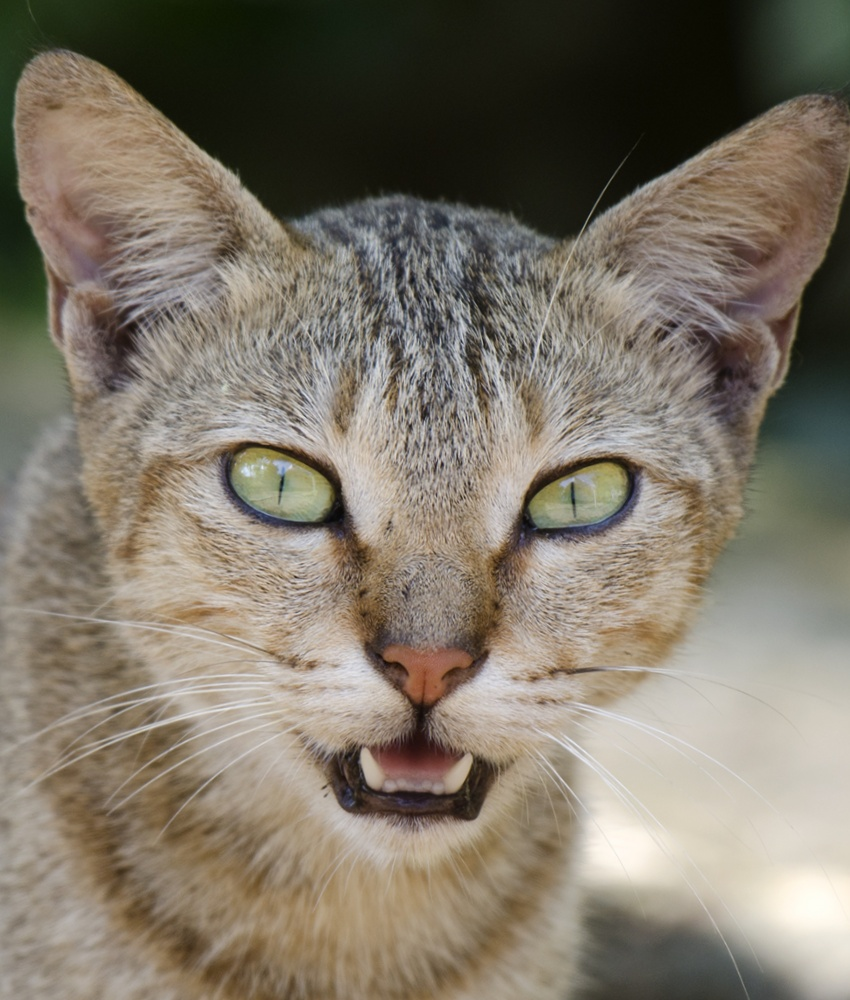
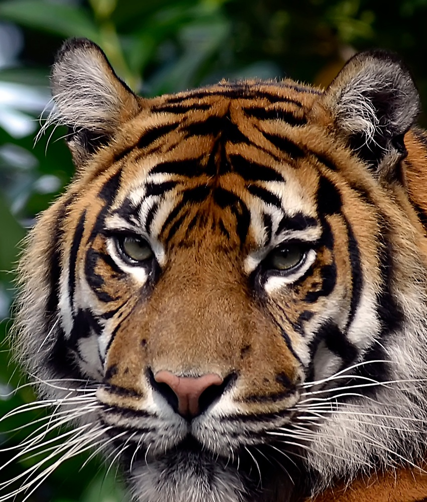
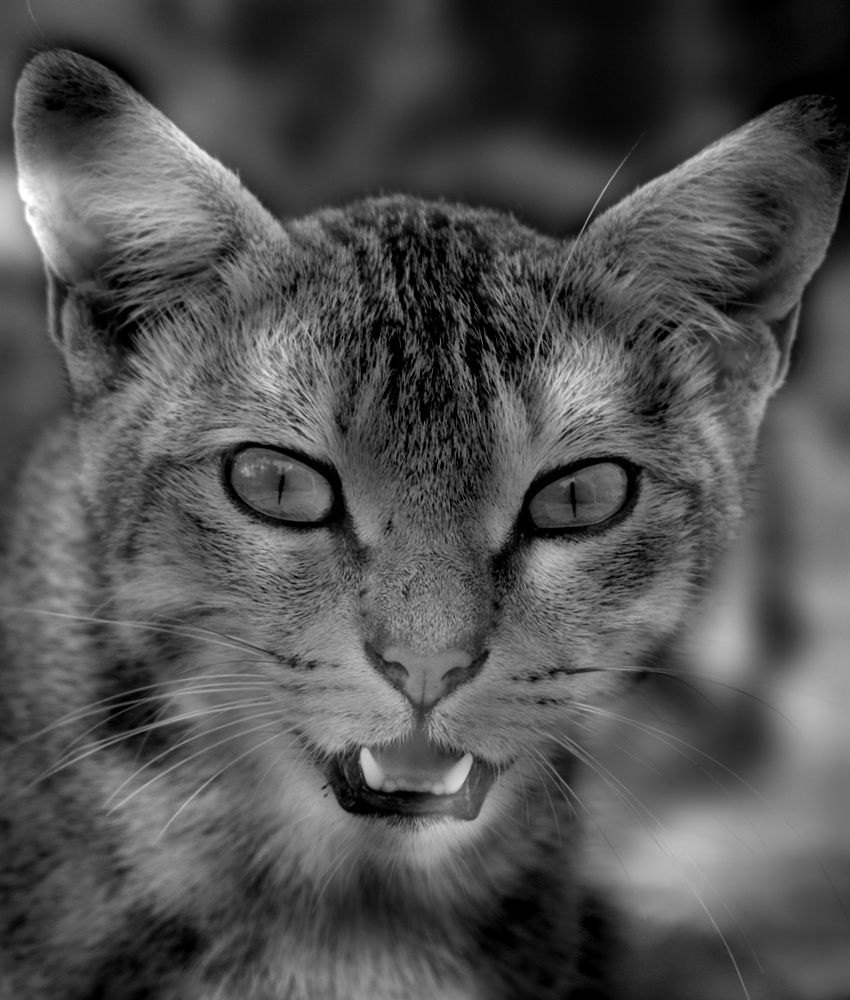
Both images are public domain or Creative Commons licensed photos from Wikimedia Commons (credits below). Close up, the cat's whiskers and green eyes read clearly. Squinting, or viewing the image small, the tiger's converging forehead stripes and dark eye markings take over instead.
Basketball and Earth (a partial failure)
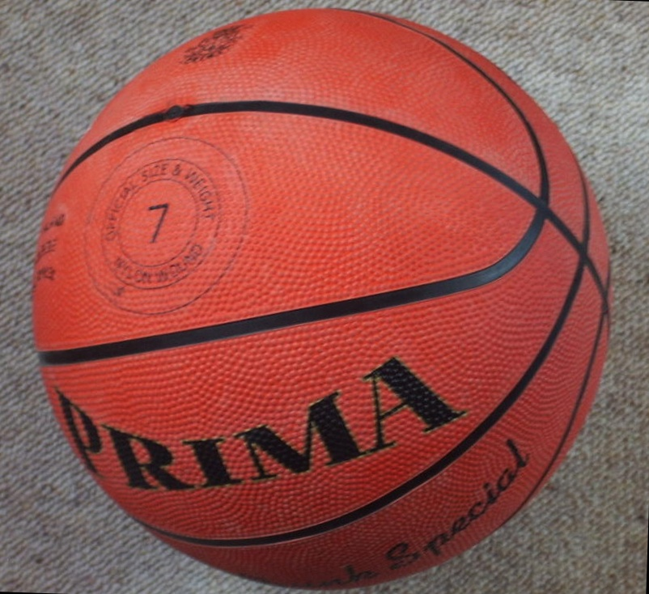
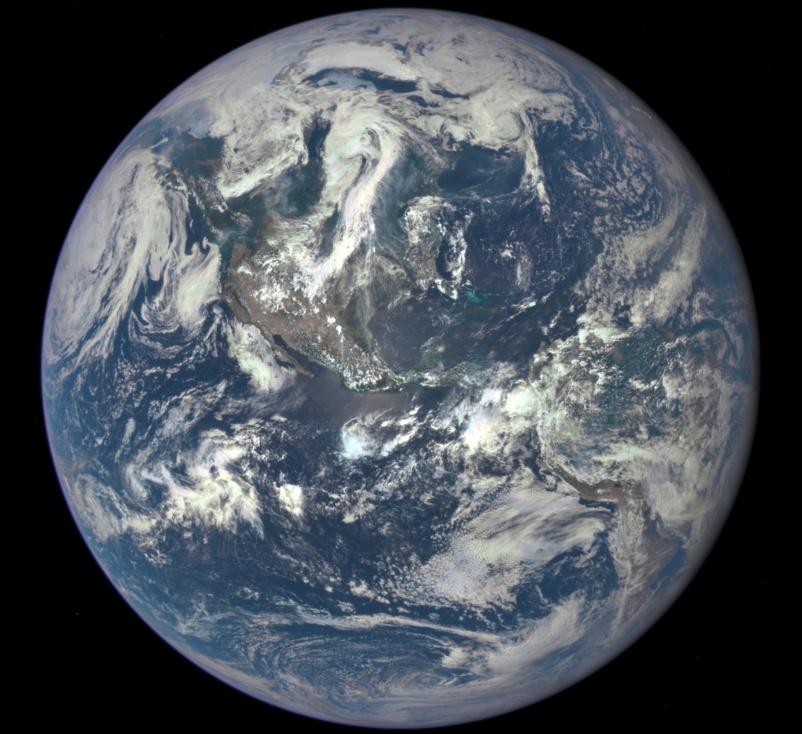
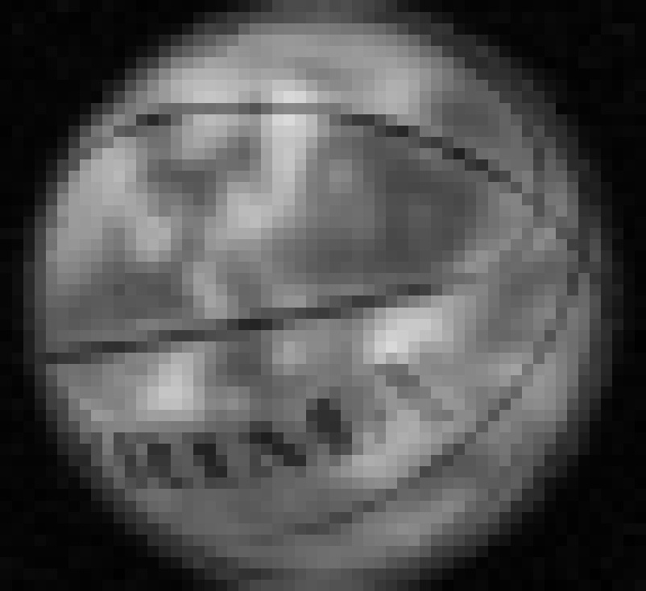
This one only partly works. A basketball's black seams are themselves fairly low-frequency, since they are thick, smooth curves rather than fine texture. Even at a high-pass cutoff of σ=20 the seams survive into the high-frequency layer and keep faintly showing through at a distance. They compete with Earth's cloud swirls instead of disappearing the way Derek's fine facial detail does. A cleaner example would need a high-frequency image whose defining features are actually fine-grained, like the leather grain texture alone, rather than features that happen to be large but thin.
A mistake I made while aligning
I originally tried clicking a center point and an edge point for the round basketball and Earth images, by analogy to clicking two eyes on a face. This broke the alignment. The alignment code assumes the midpoint of your two points is the true feature center, which is true for two eyes but not for a center-and-edge pair. The midpoint of a center-and-edge pair is a point at half radius, not the ball's actual center. The fix was to click two opposite edge points instead, the left rim and the right rim. That is the correct equivalent of "left eye, right eye" for a round object.
Bells & Whistles: does color help hybrid images?
Using the Derek and Nutmeg pair, I tried three variants: color in both the high and low frequency image, color only in the low-frequency image (high-frequency image converted to grayscale first), and color only in the high-frequency image.
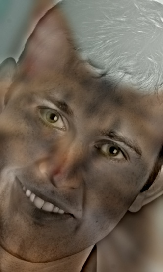
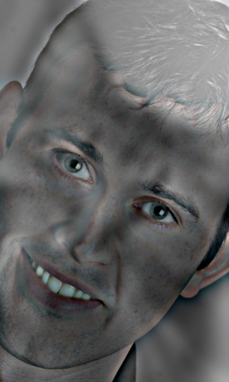
Color in the low-frequency image only looks almost as natural as color in both. Color in the high-frequency image only looks noticeably washed out and gray. This makes sense: a photo's overall color (skin tone, hair color) is mostly a low-frequency property, since color tends to change smoothly across a surface, while the high frequencies mostly carry fine grayscale texture and edges. So for the best-looking hybrid, color is worth keeping in the low-frequency image and can be dropped from the high-frequency image with very little visible loss.
Part 2.3: Gaussian and Laplacian Stacks
A stack is like a pyramid but without downsampling. Every level stays the same resolution as the original. The Gaussian stack applies progressively more blur at each level. The Laplacian stack takes the difference between consecutive Gaussian levels. Its final level is just the last, most-blurred Gaussian level, so the whole stack sums back to the original image exactly.
def gaussian_stack(img, levels, sigma):
stack = [img]
for _ in range(1, levels):
stack.append(gaussian_blur(stack[-1], sigma))
return stack
def laplacian_stack(gstack):
lstack = [gstack[i] - gstack[i + 1] for i in range(len(gstack) - 1)]
lstack.append(gstack[-1])
return lstack
I verified that summing the whole Laplacian stack reproduces the original image, to
within 7×10−17, which is pure floating point roundoff.
Here it is applied to the apple and orange pair, recreating the gist of Szeliski
Figure 3.42.
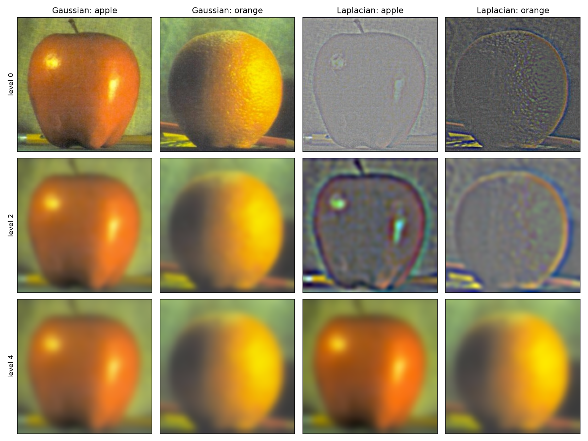
Part 2.4: Multiresolution Blending
Blending two images with a hard-edged mask leaves an obvious seam. Multiresolution blending instead blends the Laplacian stacks of both images separately at every frequency band, weighted by a Gaussian stack of the mask. This makes the mask itself progressively softer at coarser levels. A pyramid gets this softening for free as the mask shrinks, but a stack has to blur the mask explicitly, since nothing shrinks.
def blend(im1, im2, mask, levels, sigma):
g1, g2, gm = gaussian_stack(im1, ...), gaussian_stack(im2, ...), gaussian_stack(mask, ...)
l1, l2 = laplacian_stack(g1), laplacian_stack(g2)
blended_levels = [gm[i] * l1[i] + (1 - gm[i]) * l2[i] for i in range(levels)]
return sum(blended_levels)The oraple (required demo)
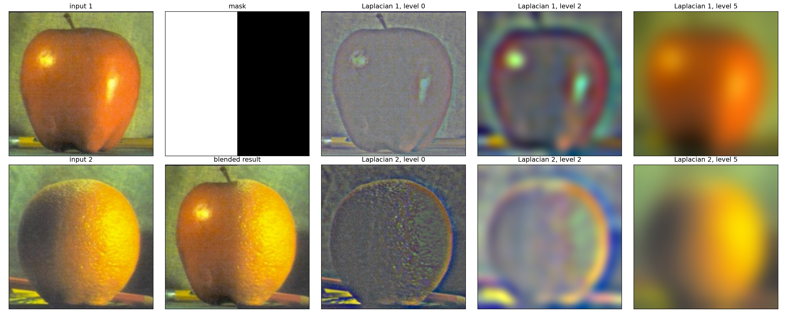
Bells & Whistles: does color help blending?
All the blends on this page are already done in full color, so as a bells and whistle I built a grayscale-only version of the oraple to see how much color is actually doing.
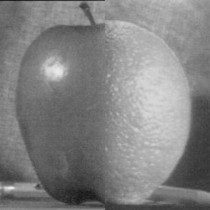
In grayscale, the apple and the orange are almost the same brightness, so the seam barely reads as "two different fruits" at all, it just looks like a slightly odd single object. Color is doing most of the work of selling the illusion here, which makes sense: unlike a hybrid image (which relies on the frequency content itself), a fruit blend relies on the two source images actually looking different, and for these two fruits, color is by far their biggest visible difference.
Lemon and lime (my own straight seam)
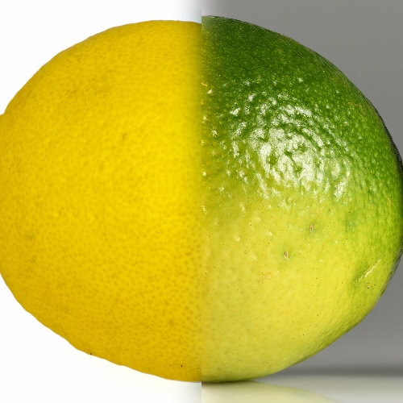
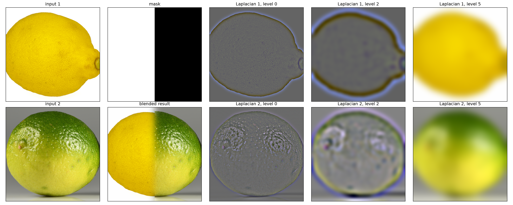
Eye and moon (my own irregular mask)
For the irregular mask requirement, I blended a photo of the full moon into a macro shot of a human eye. The mask is circular, sized and centered exactly on the pupil, so it is not a straight line at all.
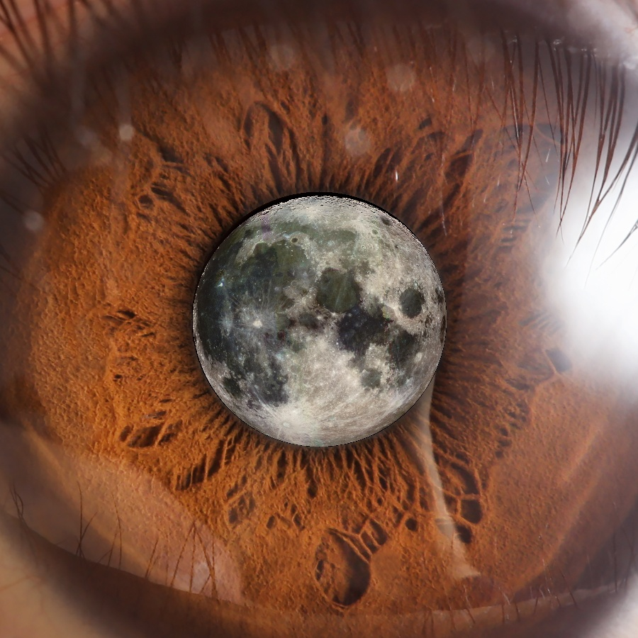
Image credits. These are stock images from Wikimedia Commons, used under their listed licenses. Cat: Augustus Binu, CC BY-SA 3.0. Tiger: Steve Wilson, CC BY 2.0. Basketball: Jaques, CC BY-SA 3.0. Earth (EPIC/DSCOVR): NASA Goddard, public domain. Lemon: Evan-Amos, CC0. Lime: Ivar Leidus, CC BY-SA 4.0. Eye: Rapidreflex, CC BY-SA 4.0. Moon: NASA/JPL/USGS, public domain.
Reflection
The idea that tied this whole project together for me was that every one of these operations is really just addition or subtraction of frequency bands. Sharpening adds back a high band. A hybrid image sums a high band from one photo with a low band from another. Multiresolution blending sums per-band Laplacian images. Once I saw the unsharp mask, the hybrid image formula, and the blending formula side by side, they stopped looking like three separate tricks. They are the same idea, decomposing into frequency bands and recombining them differently, applied three different ways. The basketball and Earth failure case was a good reminder that "high frequency" and "low frequency" describe the actual spatial frequency content of a signal, not how detailed something looks. A feature can look small while still occupying a low frequency band if it is smooth and broad, and that mismatch is exactly what broke the illusion there.